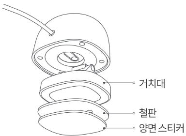
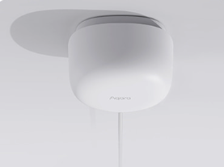
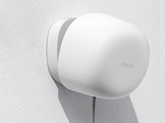
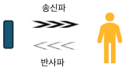
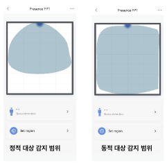
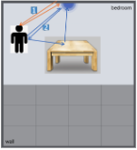
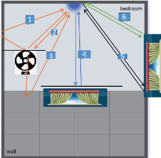

30 재실 센서 FP1
30.1 설치
질문 1: 재실 센서 FP1의 설치 방법을 알 수 있을까요?
답변 1:
재실 감지 센서 FP1의 설치 영상과 매뉴얼은 아래 링크를 클릭하시면 보실 수 있습니다.
질문 2: 재실 센서 FP1은 어디에 설치하는 것이 효과적인지요?
답변 2:
용도에 따라 설치할 위치를 조정하시는 것이 좋습니다. 가장 많이 설치되는 곳을 기준으로 설명 드리겠습니다.
(공통) 동봉된 철판과 양면 스티커를 활용해 원하는 위치에 설치 진행합니다.

(1) 천장에 설치하는 경우 : 움직임이 없거나 누워있는 상태를 감지하기에 적합니다.

(2) 벽에 설치하는 경우: 움직이거나 앉아있는 상태를 감지하기에 적합니다.

설치 높이와 각도를 조정하여 감지 범위를 조절할 수 있습니다.
넓은 공간의 센싱이 필요한 경우, 높이 2미터이상 위치에 제품이 아래를 향하는 각도로 설치하여 주요 활동 구역을 커버 할 수 있습니다.
질문 3: 기존에 사용하던 재실 센서 FP1가 고장이 났습니다. 그런데, 기존 FP1이 다른 아카라디바이스들과 함께 자동화 및 동시 실행을 사용하고 있었습니다. 새로운 FP1 설치하려고 하는 데 기존 FP1의 자동화 및 동시실행등의 설정을 그대로 이어 받는 방법이 있는지요?
답변 3:
네 있습니다. 재실 센서 F1 메인 화면에서 우측 상단 ’…’을 클릭하세요. 아래 부분에 “기기 대체” 메뉴가 있는데, 여기에서 장치를 교체하실 수 있습니다. 본 기능은 장치가 손상, 분실 또는 연결이 끊어진 경우 새로운 장치를 선태하여 교체할 수 있도록 도와 줍니다.
30.2 사용팁
질문 1: 모션 센서 T1과 재실 센서 FP1은 무엇이 다른 지요?
답변 1:
모션 센서 T1은 적외선 감지 기능을 이용해서 움직임을 감지합니다. 그래서, 미세한 움직임을 감지하는 일에는 한계가 있습니다. 반면에 재실 센서 FP1은 레이터 방식으로 센서로 물체로 부터의 반사를 통해 아주 미세한 움직임까지 잡아냅니다.
질문 2: 재실 센서 FP1은 무엇을 감지할 수 있는지요?
답변 2:
FP1은 공간에 사람이 있는지, 없는지, 들어오는지, 나가는지, 다가오는지, 멀어지는지 등의 상태를 모니터링할 수 있으며, 일부 실험실 기능인 실시간 추적, 좌우 진입 및 이탈, 영역 위치 설정 기능을 갖추고 있습니다.
질문 3: FP1은 여러 사람을 감지하는 데 사용할 수 있습니까?
답변 3:
사용자가 설정한 “사람이 있는지/없는지”와 같은 응용 프로그램의 경우, 공간 내의 여러 사람은 존재 유형을 판단하는 데 영향을 주지 않습니다. 그러나 “영역 위치” 응용 프로그램의 경우, 현재 센서는 여러 사람을 감지하지 못하며, 단일 대상의 추적과 위치 지정만 지원합니다. 공간에 여러 대상이 존재하는 경우, 센서는 최대 신호를 갖는 대상을 우선적으로 추적합니다.
질문 4: 감지영역이란 무엇인가요?
답변 4:
“감지 영역”은 사용자가 더 구체적인 영역 자동화를 구성할 수 있도록 돕기 위해 설정하는 것입니다. 현재 사용자에게 28개의 셀을 선택할 수 있는 옵션을 제공하여, 사용자가 자유롭게 영역 이벤트의 트리거로 사용할 영역을 선택할 수 있습니다. 예를 들어, 소파, 욕실, 서재, 식탁 등의 영역을 설정할 수 있습니다. 감지 영역을 설정한 후에는 자동화 조건에 감지 영역을 추가할 수 있습니다. 최대 10개의 감지 영역을 지원합니다.
질문 5: “영역 자동화”에서의 “사람 있음/없음”, “진입/이탈” 이벤트는 기존 이벤트와 어떤 차이가 있나요?
답변 5:
“사람 있음/없음”, “진입”, “이탈” 세 가지 조건은 전역 이벤트와 유사하지만, “이탈” 이벤트는 다릅니다. 지역의 “이탈”은 즉각적인 판단을 기반으로 합니다.
질문 6: 다수의 사람이 있는 상황에서 영역 위치에 대응하는 자동화를 사용하려면 어떻게 해야 하나요?
답변 6:
다수의 사람이 있는 상황에서 영역 자동화를 사용하려면, 다음과 같은 방법을 제안합니다:
(1) 트리거 조건 설정: 각 영역에 대해 “진입” 또는 “사람 있음” 이벤트를 트리거로 설정하여 해당 영역에 사람이 들어왔을 때 해당 이벤트가 작동하도록 합니다.
(2) 작동 이벤트 설정: 각 영역에 대한 작동 이벤트를 설정합니다. 예를 들어, 거실에 사람이 들어왔을 때 영화 시청을 위한 조명과 오디오 장비를 작동하도록 설정할 수 있습니다.
(3) 자동화 종료 설정: 모든 영역에서 사람이 나갔을 때 “사람 없음” 이벤트를 사용하여 모든 작동 이벤트를 종료하도록 설정합니다.
이렇게 함으로써 각 영역에 대한 자동화 이벤트가 겹쳐서 작동하지 않고, 각 영역에 사람이 들어오거나 나갔을 때 올바른 작동 이벤트가 발생하도록 보장할 수 있습니다.
질문 7: 구역 배경 이미지는 무엇 용도 사용하는지요?
답변 7:
“구역 배경 이미지”는 사용자가 참조용으로 구역을 쉽게 파악할 수 있도록 돕는 데 사용됩니다. 이것은 사용자가 목표물의 위치를 더 정확하게 이해할 수 있도록 돕습니다. 배경 이미지는 사용자의 주관적인 판단에만 영향을 미치며, 장치의 인식 성능에는 영향을 미치지 않습니다. 최대 열 개의 아이콘을 지원합니다.
질문 8: 간섭원, 출입구, 가장 자리 설정의 역할은 무엇인지요?
답변 8:
간섭원, 출입구, 가장자리 설정은 다음 용도에서 필요합니다.
(1) 간섭원: 주변에 있는 간섭요소(예: 에어컨, 선풍기, 커튼 등)를 식별하고, 이를 감지하는 센서의 성능에 영향을 줄 수 있는 요소로 표시합니다.
(2) 출입구: 공간에 사람이 들어오고 나가는 지점을 설정하여, 해당 지점에서의 움직임을 식별하여 자동화 이벤트를 트리거할 수 있습니다.
(3) 가장자리: 감지 영역의 가장자리를 설정하여, 가장자리 영역에서의 움직임에 대한 자동화 이벤트를 관리할 수 있습니다. 가장자리 설정은 주로 벽이나 다른 장애물에서의 반사 신호를 줄이기 위해 사용됩니다.
이러한 설정은 사용자가 센서의 환경을 보다 정밀하게 조정하고 움직임을 관리하는 데 도움을 줍니다.
질문 9: FP1의 버튼은 어떤 용도로 사용하는지요?
답변 9:
버튼은 다음과 같은 기능을 수행합니다:
(1) 한 번 누르기: 재실센서 FP1이 아카라 허브에 정상적으로 바인딩되어 있을 때, 버튼을 한 번 누르면 센서와 게이트웨이 간의 통신이 정상인지 확인됩니다. 통신이 정상이면 게이트웨이가 “통신 정상”이라는 음성 메시지를 재생합니다.
(2) 5초간 길게 누르기: 버튼을 5초 동안 길게 누른 후에는 앱의 안내에 따라 센서를 Zigbee 게이트웨이에 추가할 수 있습니다.
질문 10: FP1과 아카라 허브와 연결 범위는 얼마나 되는지요?
답변 10:
다양한 실내 환경에서 작동 거리가 다릅니다. 일반적인 가정 내에서는 재실 감지 FP1과 아카라허브 간의 거리가 20미터를 넘지 않도록 하고, 그 사이에는 두 개의 벽을 초과하지 않도록하는 것이 좋습니다.
질문 11: FP1의 설치 위치가 적절한지 확인하는 방법이 있나요?
답변 11:
성공적으로 바인딩된 후에는, FP1메인 화면에 작은 인물 아이콘이 표시되고, 그 이동 경로가 사용자와 일치하는 경우, 디바이스가 위치 데이터를 정상적으로 보고할 수 있습니다. 참고로, 디바이스의 표시에는 약간의 지연이 있을 수 있으며, 이는 Zigbee 네트워크와 서버 간의 통신으로 인한 것입니다.
만약 감지 영역을 벗어나면서 디바이스가 30초 이내에 정확하게 ‘사람 없음’을 보고한다면, 디바이스의 현재 설치 위치가 주요 요구 사항을 충족시킬 수 있음을 나타냅니다. ’사람 없음’ 신호가 더 빠르게 전송될수록 환경에 미치는 영향이 적으며 정확한 판단이 쉬워집니다. 그러나 ‘사람 없음’ 신호가 오랜 시간동안 전송되지 않거나 전송되지 않으면, 공간에 어느 정도의 간섭이 있을 수 있으므로 환경을 확인하고 위치를 변경할 수 있습니다.
설치시 움직이는 물체 및 일정 기간 동안 움직일 물체를 피하고 잘못된 신호를 방지하기 위해 주의해야합니다.
질문 12: FP1의 최대 감지길이는 얼마입니까?
답변 12:
재실 센서 FP1의 감지 범위는 손전등과 유사합니다. 그러나 이 센서의 경우 수평 범위가 120도, 수직 범위가 40도이며, 반경 거리는 약 5미터입니다. 재실 센서 FP1이 커버해야 할 영역을 정하려면 손전등을 들고 해당 영역을 커버할 수 있는지 확인하십시오.
질문 13: FP1의 자동화 조건에서 “사람이 다가올때” 또는 “사람이 멀어질때”는 언제 사용하는지요?
답변 13:
사용자가 센서에 접근할 때 조명을 밝게 하거나 멀어질 때 조명을 어둡게 할 수 있습니다. 접근 감지 거리의 세 가지 단계는 각각 1미터, 2미터, 3미터를 나타내며, 설정된 이 임계값에 따라 작동합니다. 멀리서 이 임계값에 접근하면 접근 이벤트가 발생하고, 가까이서 이 임계값을 벗어나면 멀어짐 이벤트가 발생합니다. 이렇게 설정된 자동화를 통해 사용자는 물체의 접근 또는 멀어짐에 따라 조명 등의 기기를 자동으로 제어할 수 있습니다.
질문 14: FP1의 전체 감지(무방향 감지)와 좌우감지의 차이는 무엇입니까?
답변 14:
가끔 사용자는 장치를 천장이나 침대 아래와 같은 곳에 설치하여 수면 상태를 감지하는 데 사용합니다. 이런 경우에는 전체 감지 모드(무방향 감지 모드)를 선택할 수 있습니다. 그러나 측면에 설치하는 경우에도 전체 감지 모드(무방향 감지 모드)를 선택하면 문 앞으로 들어가는지 나오는지와 같은 상황을 구별할 수 없습니다. 한편, 좌우 감지 모드를 선택하면 문이 왼쪽에 있을 때 왼쪽으로 들어오거나 나갈 때를 구별할 수 있습니다. 이러한 이벤트를 사용하면 상황을 더 잘 구분할 수 있습니다.
질문 15: FP1는 어떻게 초기화(리셋) 시킬 수 있나요?
답변 15:
FP1 하단의 리셋버튼을 5초간 눌러 주세요.
질문 16: FP1을 간략히 소개해 주세요.
답변 16:


FP1은 60GHz 부근의 밀리미터파를 송신하고 되돌아온 반사파를 수신하여 물체의 이동은 물론 아주 미세한 움직임까지 잡아내는 센서입니다.이를 통해 기존 PIR(적외선, 열) 모션 센서가 가만히 있는 사람을 감지할 수 없던 문제가 해결되었습니다.
밀리미터파는 천, 베니어판, 플라스틱 등의 얇은 파트는 통과할 수 있지만, 이 과정에서 많은 신호 감쇠가 이루어져 권장하지 않는 환경입니다.
인체의 호흡과 심장박동 수준의 아주 미세한 움직임까지 잡아내는 정밀함을 가졌지만
이에 대한 반대급부로 선풍기, 바람에 움직이는 커튼, 식물, 조명 등 미세한 움직임을 띄는 제품들이 오감지의 원인이 되기도 합니다. 때문에 제품을 최적의 상태로 사용하려면 제품에 대한 이해, 적절한 환경 구성, 앱에서 제공하는 제품 설정 등이 병행되어야 합니다.
감지 범위를 28개의 구역(4*7, 각 구역은 1m*1m)으로 쪼개 물체의 위치를 확인할 수 있습니다.
질문 17. FP1이 어떻게 재실판단를 하는지 간단하게 매카니즘을 설명해 주시겠습니까?
답변 17:
사람에 대한 재실판단 매커니즘은 다음과 같습니다 (기본 사람 없음 상태에서 시작) :
오감지를 배제하기 위해 처음 사람 있음으로 판단하기 전까지는 미세한 진동과 움직임은 처리하지 않습니다.
사람으로 인식할만한 큰 물체(판단에 약 0.4초 소요)가 들어오고 이에 대한 감지가 지속되면 사람 있음(판단에 약 6초 소요)으로 인식하게 됩니다.
이때부터는 재실에 대한 판단을 지속해야 하므로 아주 미세한 움직임까지 처리하기 시작합니다. 즉, 시점부터 바람에 흔들리는 식물, 커튼, 에어컨, 선풍기, 컴퓨터, 기타 진동하는 물체들이 사람으로 오인식 될 수 있으며, 이를 고려해 제품 설치 위치를 결정하거나 앱에서 제공하는 감지 배제 설정을 진행해야 합니다.
모든 움직임이 사라지면 다시 사람 없음(판단에 약 10~30초 소요) 상태로 감지 상태가 전환됩니다.

FP1은 1인에 대한 추적만을 지원합니다.
인체에서 가장 움직임이 큰 부위가 있는 지점을 좌표에 나타냅니다. (1번)
인체 -> 물체 -> 레이더 순으로 돌아온 반사파에 대해서는 여러 알고리즘을 통해 거짓 타겟으로 분류해 고스트 현상을 방지합니다. (2번)

센서에서 송신한 밀리미터파가 작동중인 선풍기에 도달하면, 팬의 회전에 의해 여러 방향으로 반사되게 됩니다. 이는 오감지의 원인이 되며 선풍기의 위치를 간섭원으로 설정하여 보완할 수 있습니다. (1, 2, 3번)
커튼은 밀리미터파의 일부는 투과하고 일부는 반사하며 바람 등의 작은 에너지에도 큰 움직임까지 가지기 때문에 상당한 오감지를 유발할 수 있는 물체입니다. 커튼과 그 너머 범위를 모두 간섭원 설정하여 보완할 수 있습니다. (4번)
FP1의 경우 기술적인 문제로 한 칸을 간섭원 설정하면 해당 행이 모두 간섭원 설정됩니다.
출입구, 간섭원, 모서리(벽) 설정은 각 항목에 단 하나만 적용됩니다. 중복 생성 시 가장 마지막에 설정된 내용만 적용됩니다.
위와 같은 이유로 커튼의 위치를 고려하지 않은 채 FP1의 설치 위치를 잡으면 너무 많은 범위를 간섭원 설정해야 하기 때문에, 제품의 사용성에 문제가 발생합니다. (5, 6번)
질문 18: FP1을 빠르고 간편하게 설치하고 설정하는 방법을 알려 주세요.
답변 18:
움직임이 있는 모든 물체는 가능한 레이더 센서 반대편 혹은 감지 범위에 들어오지 않게 합니다.
센서의 감지 민감도를 낮음(약)에서 사용하고 적절히 감지가 이뤄지지 않는다면 한 단계씩 변경합니다.
오감지가 일어나는 위치를 간섭원 설정합니다.
별다른 오감지가 발생하지 않는다면, 자동화 생성 시 누군가 들어옴(Enter) 조건을 사용해 빠르게 자동화를 트리거 시킬 수 있습니다. (사람 있음으로 설정 시 트리거에 6초 소요)
민감도 높음 (AI 환경 학습)
일반적인 환경에서는 감지 민감도를 낮음 또는 중간으로 설정해도 충분합니다. 수면 시 감지에 문제가 있거나 기타 정적인 상황을 감지하기 어려운 경우에만 높음으로 설정해 주세요.
감지 민감도 설정을 높음(강)으로 설정한 후 사람 없음 상태로 설정을 누르면 약 1분간 공간을 학습하며, 이후에도 사람 없음으로 판단할 때마다 정보를 업데이트 합니다. (감지 범위 내에 사람이 있는 상태에서 해당 기능을 실행하면 오동작의 원인이 됩니다.)
30.3 Troubleshoot
질문 1: FP1이 가끔 오프라인으로 보입니다. 그 이유는 무엇인지요?
답변 1:
FP1과 아카라허브 간의 거리가 너무 멀거나 중간에 금속 장애물이 있을 수 있습니다. 이 경우 아카라허브에 가까이 이동하고 금속 장애물을 피해 보십시오. 참고로, 더 나은 사용 경험을 위해 장치 펌웨어를 시기적절하게 업그레이드하여 장치 간의 호환성과 안정적인 통신을 보장하십시오.
질문 2: 재실 센서가 사람이 없는데도 오감지를 하는 경우가 많습니다. 어떻게 해결해야 하는지요?
답변 2:
공간내 움직움 또는 미세한 떨림이 발생하는 물체가 있는 경우 감지 정확도가 떨어질 수 있으니 해당 물체를 센서의 감지 범위 밖에 위치시켜 주세요. 그리고. FP1 메인화면의 우측 상단 ’…’을 클릭하시고 “기기 설정”에 들어가면 “민감도” 옵션이 있습니다. “민감도”를 중 또 하로 설정해 주세요. 그리고, 센서의 감지 범위내에 유리창이 있다면 감지 정확도가 떨어질 수 있습니다.
질문 3: FP1이 사람을 감지한 후 가만히 있으면 사람이 없는 것으로 바뀝니다. 물론 움직이면 다시 사람을 감지합니다.왜 가만히 있으면 사람이 없는 것으로 표시되는 것일까요?
답변 3:
간섭원을 설정할 경우 한칸만 설정해도 해당 행이 모두 간섭원 지정이 됩니다. 이런 경우에 해당되지 않는다면, 다음과 같이 테스트 해 보시기 바랍니다.
간섭원 삭제 > 사람없음 상태로 초기화 한 후 1분 대기 > 테스트 진행